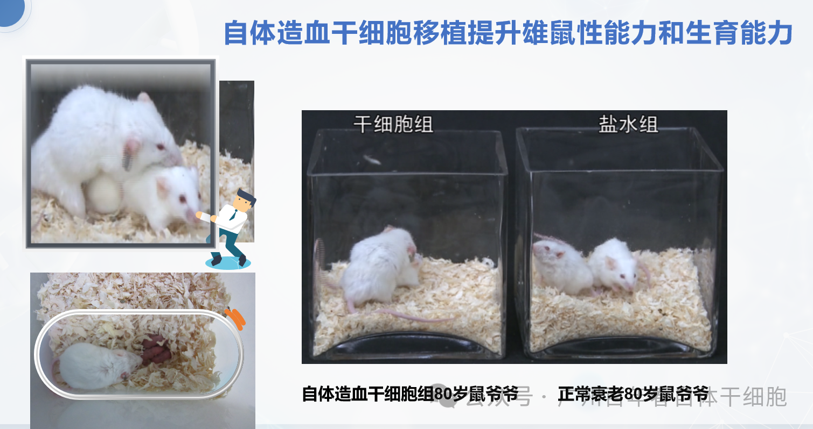
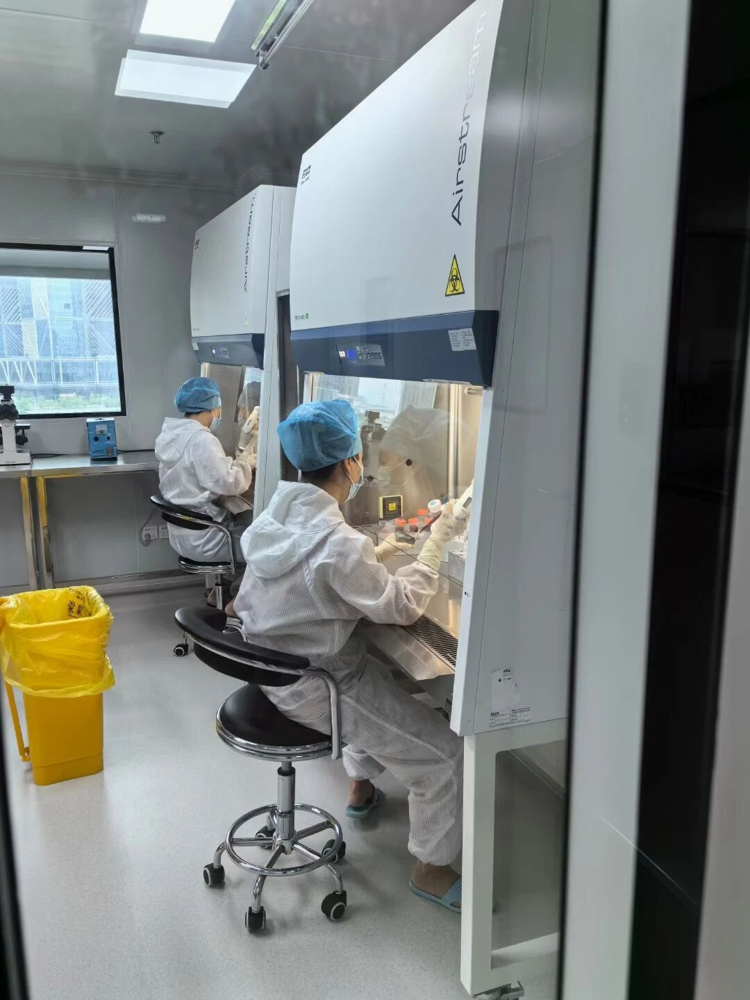
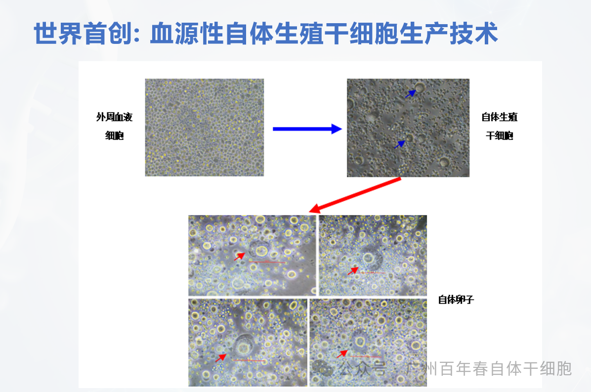
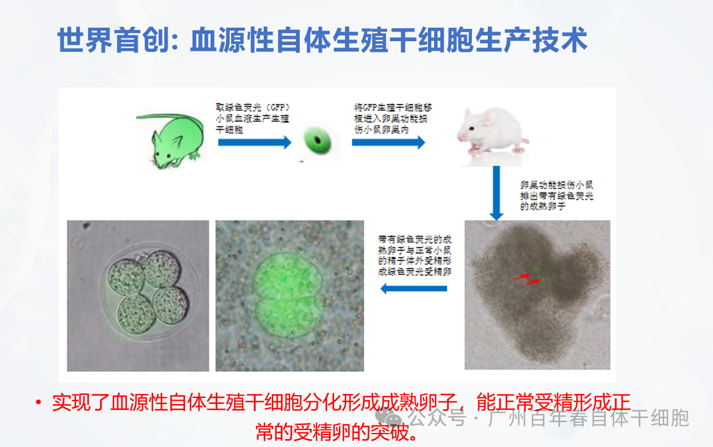
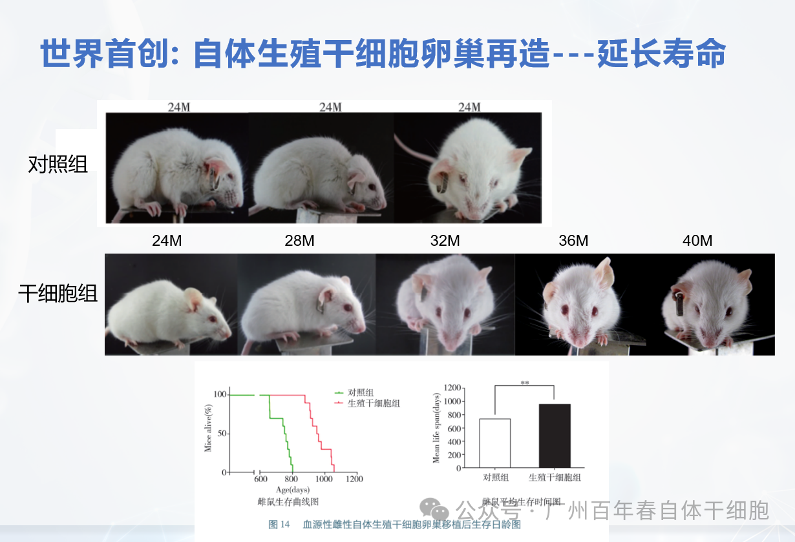
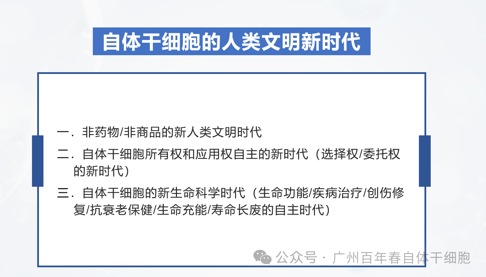
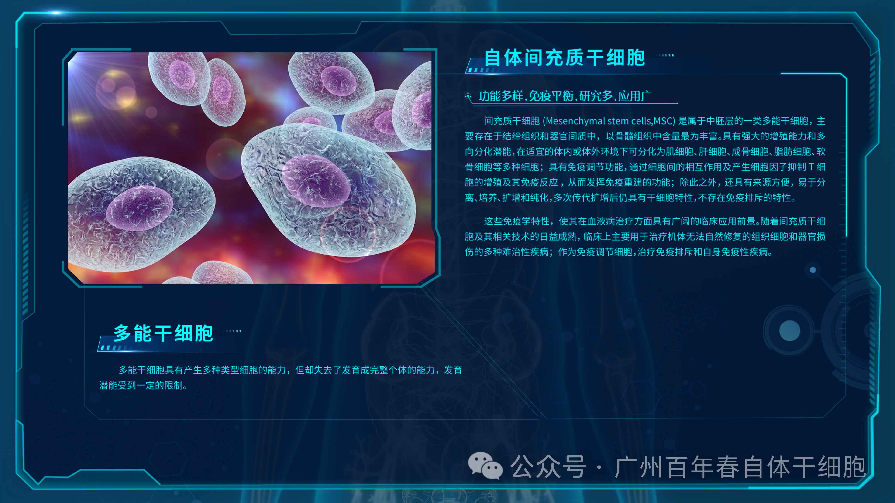
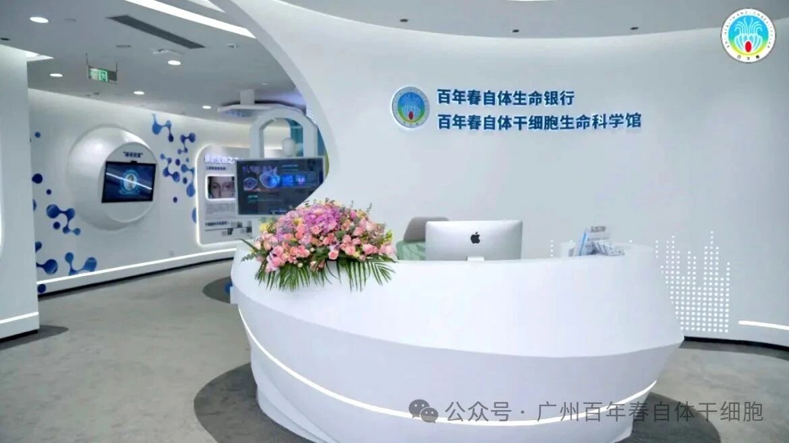

年后肝"负重"？百年春护肝美颜能量抗衰老针——给肝"松绑"，让脸发光！
2026-03-01

About Us
关于百年春
科学趣闻：鼠爷爷的“逆袭”
一场由粗心引发的生殖力革命
有时候，最惊人的科学发现，往往始于一个美丽的错误。
在再生医学的实验室里，科学家们每天都在与微观世界的神秘力量打交道。他们的工作严谨、精确，容不得半点马虎。但偶尔，一点点人为的意外，反而能撞开一扇意想不到的大门，揭示出生命令人惊叹的潜能。
今天要讲的，就是一个关于返老还童、实力碾压和科学家目瞪口呆的趣味实验故事。

故事的主角是一位鼠爷爷。它年事已高，相当于人类七八十岁的年纪，早已过了精力旺盛的时期，对鼠生大事也意兴阑珊。我们的科学家团队正在研究一项前沿技术：利用自体干细胞重振生殖能力。他们从鼠爷爷体内获取了体细胞，通过复杂的体外培养和诱导，成功将其变身为具有活力的生殖干细胞——这些，就是制造生命种子的始祖细胞。



将这些象征着青春火种的干细胞，移植回鼠爷爷体内，观察其生殖系统是否能因此焕发第二春。为了检验效果，他们按照科学惯例，请来了一位年轻的鼠女士作为搭档，将它们暂时安置在一起进行短期观察。


一天的实验观察结束了。或许是归心似箭，或许是忙于其他事务，一位实验员在清理场地时，犯了一个小小的、却可能致命的错误：他忘记将年迈的鼠爷爷从年轻母鼠的笼子里拿出来了。
在啮齿类动物的世界里，这通常是个灾难。年轻的个体往往更具攻击性和活力，一只衰老的雄鼠与一只年轻的雌鼠长时间共处一室，很可能会遭到攻击，或在竞争中精疲力尽，甚至发生不测。
当科学家得知这个消息时，心里“咯噔”一下。“完了，”他心想，“鼠爷爷恐怕凶多吉少，明天的实验室怕是要上演一场悲剧。”他带着一丝愧疚和担忧，度过了难眠的一夜。
第二天一早，科学家怀着沉重的心情快步走向实验室。他已经做好了最坏的心理准备。
然而，当他凑近笼子一看，眼前的景象让他惊得差点掉了下巴：
鼠爷爷非但没有萎靡不振，反而精神抖擞，毛发都显得顺滑了些，正在笼子里悠闲地踱步，俨然一副“一家之主”的派头。
而旁边那只本应活力四射的年轻母鼠，却无精打采地趴在角落，眼神中透露出一种生无可恋的疲惫。
这场面，完全颠覆了科学家的预期。这根本不是一场欺凌，而像是一场……实力悬殊的较量，只不过占尽上风的，竟是那位本该弱势的长者。
在短暂的震惊之后，狂喜涌上了科学家的心头。这个意外的结果，非但不是一场事故，反而是一个巨大的成功！
他们移植的自体生殖干细胞，在鼠爷爷体内发挥了超乎想象的作用。这些新生的干细胞成功地定居下来，并开始高效地工作，大量生产充满活力的精子。这使得鼠爷爷的生殖系统恢复甚至可能超越了其年轻时的巅峰状态，从一位垂暮老者逆袭成了生殖健将。
那个夜晚，在笼子里发生的，不是恃强凌弱，而是一场由最新生物科技支持的、不公平的实力展示。鼠爷爷用自己重燃的青春之火，证明了这项技术在提升繁殖力方面的巨大潜力。
这个有趣的小插曲成为平时我们的美谈。它不仅仅是一个关于粗心带来好运的故事，更是一个生动的例证，展示了再生医学在逆转生殖衰老方面的巨大应用前景。
这项技术的意义远不止于让鼠爷爷恢复雄风。它为解决人类面临的生殖难题——如因年龄、疾病或化疗等原因导致的生育能力下降——提供了一条充满希望的新思路。
所以，下次当你在生活中犯了一个无心的错误时，先别急着懊恼。也许，就像那位忘记取出老鼠的实验员一样，你无意中打开了一扇窗，而窗外，正是一片意想不到的、璀璨的星空。


电话：13417915664（微信同步）
广州百年春以往资讯点入：广州百年春血源性自体干细胞11种类介绍